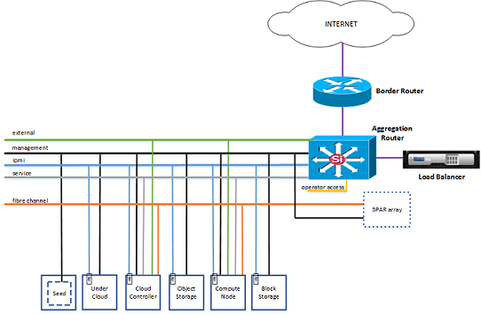
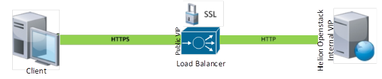
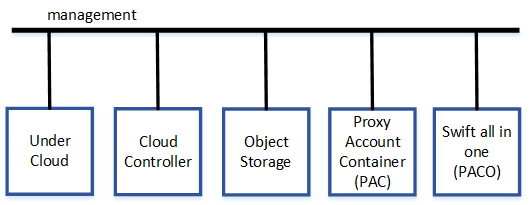
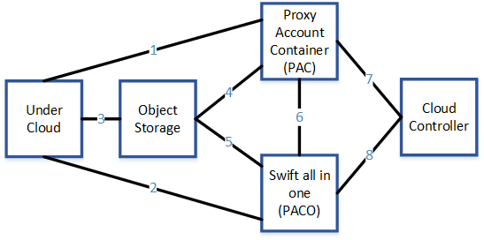
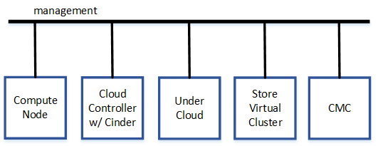
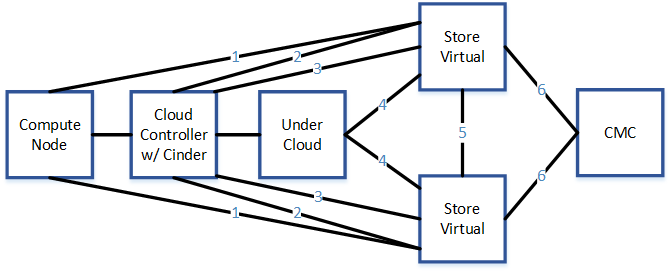
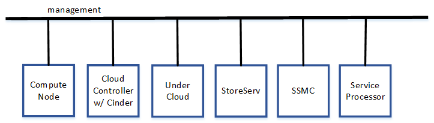
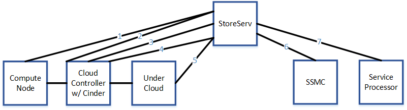
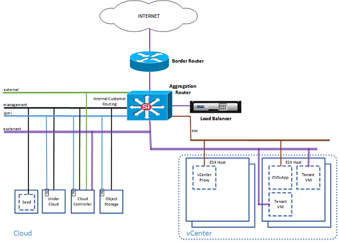

HP Helion OpenStack® 1.0: Configuring Your Network Securely
This document provides guidance on configuring your HP Helion OpenStack network securely
HP Helion OpenStack has many built-in security controls, but the customer must take responsibility for configuring the network devices that integrate Helion services into an existing data center environment. This includes defining firewall rules at the edge of the HP Helion OpenStack deployment (to protect against external abuse) as well as defining router rules within the HP Helion OpenStack deployment (to protect against insider abuse or administrative errors).
- Network Topology
- Securing the Perimeter
- Securing the Object Operations (Swift) back-end network connections
- Securing Block Storage network connections
- Additional Block Storage Resources
- Securing ESX network connections in Helion
- Service network
Network Topology
HP Helion OpenStack is deployed on three physical networks: IPMI, Fibre Channel, and the Cloud LAN which is subdivided into VLANs to produce the External, Management, and Service LANs as depicted in Figure 1.
Figure 1: Typical HP Helion OpenStack network topology

View larger image (opens in a new window)
){kind=link}
In Figure 1, the Border Router and the Aggregation Router are customer devices that perform routing at the perimeter of the environment. The Load Balancer is a recommended customer device to provide TLS termination. The following sections provide guidance on how to configure these network devices for improved security. Note that HP Helion OpenStack includes IPtable rules on each node to close network ports that are not needed, but applying additional rules to your network devices (as indicated in the sections that follow) will provide increased security.
Securing the Perimeter
The perimeter is indicated by the Border Router icon in Figure 1.
When securing the perimeter, consider the following:
- VLAN configuration recommendations
- IP addressing recommendations
- VLAN routing interface recommendations
- Access control recommendations
- Server connectivity recommendations
- Public endpoint recommendations
- Configuring the load balancer
- About SSL Offloading on Load Balancer
- IP mapping concerns
VLAN configuration recommendations
When configuring the VLAN, consider the following:
External VLAN - Used for binding a routable address to a Compute (Nova) VM launched in Helion. Compute VMs are hosted in a Compute Node.
Management VLAN - Every baremetal host has an address on this network for in-band management purposes.
Service VLAN - Provides a path from Development Platform services (such as Database as a Service) running in the Compute VMs to the Centralized Logging Service running in the undercloud.
Intelligent Platform Management Interface (IPMI) VLAN - Provides a way to manage a computer that may be powered off or otherwise unresponsive by using a network connection to the hardware rather than to an operating system or login shell.
IP addressing recommendations
When configuring IP addressed, consider the following:
External VLAN - Usually public IP subnet, size according to max desired VM count that needs to be external facing.
Management VLAN - Private IP subnet, size according to max physical servers in deployment.
Service VLAN - Private IP subnet, size accordingly with Management VLAN.
VLAN routing interface recommendations
When configuring the VLAN routing interfaces, consider the following:
- All the three VLANs have their respective routing interface configured on an aggregation router(s). The IP address on each of these VLAN interfaces will serve as gateway IP for servers in that particular VLAN.
Access control recommendations
When controlling inbound and outbound traffic access, consider the following:
Outbound and Inbound access to External VLAN is controlled at both the border and aggregation router(s).
Outbound and Inbound access to the Management and Service VLANs is controlled at the aggregation router(s).
Server connectivity recommendations
When configuring server connectivity, consider the following:
As shown in figure Typical HP Helion OpenStack network topology, all of the Cloud Controller servers are members of all three VLANs. However, these servers have IP addresses configured only for the management VLAN.
Public endpoint recommendations
We recommend a load balancer be placed in front of the OpenStack APIs that can fill these functions:
A. Terminate the SSL connection.
B. Redirect http > https.
C. Map standard https port (tcp/443) to native OpenStack ports.
Configuring the load balancer
Use the following steps when configuring the load balancer:
- Obtain an SSL certificate for the fully qualified domain name (FQDN) from a public Certificate Authority (CA).
- Configure the SSL Virtual Server IP (VIP) with SSL Offloading on the Load Balancer.
- Configure an HTTP Virtual Server IP (VIP) on the Load Balancer with an http to https redirection policy.
- Create a DNS A record for the FQDN in the DNS server.
- Update required access control lists or firewall rules to allow traffic to the Public VIP IP.
About SSL offloading on the load balancer
SSL offload is designed to function in a similar manner to Figure 2.
Figure 2: SSL offload

All traffic encryption/decryption between the client and server is handled by the Load Balancer. The Load Balancer decrypts all the SSL traffic from client. Once the data has been decrypted it is sent to the backend server in plain text HTTP. Similarly, plain HTTP traffic from the backend server is encrypted back to HTTPS by the Load Balancer before sending it to client.
IP mapping recommendations
A typical deployment would have public to mgmt IP mapping as follows:
- Overcloud Horizon Dashboard access
- External url -
https://horizon.fqdn.com/ - Internal url (VIP) -
http://<HelionOpenStackInternalVirtualIP>/
| API | Public Endpoint | Management Endpoint |
|---|---|---|
| Identity (Keystone) | https://keystone.fqdn.com/v2.0 | http://<internalVIP>:5000/v2.0 |
| Image (Glance) | https://glance.fqdn.com/ | http://<internalVIP>:9292/ |
| Network (Neutron) | https://neutron.fqdn.com/ | http://<internalVIP>:9696/ |
| Compute (Nova) | https://nova.fqdn.com/v2/$(tenant_id)s | http://<internalVIP>:8774/v2/$(tenant_id)s |
| Volume (Cinder) | https://cinder.fqdn.com/v1/%(tenant_id)s | http://<internalVIP>:8776/v1/%(tenant_id)s |
| Orchestration (Heat) | https://heat.fqdn.com/v1/%(tenant_id)s | http://<internalVIP>:8004/v1/%(tenant_id)s |
| Object Store (Swift) | https://swift.fqdn.com/v1/AUTH_%(tenant_id)s | http://<internalVIP>:8080/v1/AUTH_%(tenant_id)s |
Note: These mapping are not an integral part of the Keystone service catalog. When a Keystone catalog is requested, it will always return the management IP. The Cloud administrator needs to publish the equivalent public endpoint for each service that needs to be externalized. Consider other endpoints to consider, such as the VNC console and so forth.
To protect against external attacks on Helion services, your firewall should be configured with a rule to block any requests originating from outside the network that attempts to reach any of the HP Helion OpenStack nodes or any 3PAR StoreServ or StoreVirtual VSA appliances dedicated to the HP Helion OpenStack installation, other than those indicated this table:
| Description | Initiating node (from) | Receiving node (to) | Port |
|---|---|---|---|
| User requests to API endpoints and Horizon console | External network | Cloud Controller Nodes | 443 |
| Cloud Administrator access for Administrator/Operations activities | Your enterprise intranet/VPN | All Helion nodes | 22, 80, 81,8080, 6080 |
| Integration with end user portals/application | Your enterprise intranet/VPN | All Helion nodes | 5000, 9292, 9696, 8774, 8776, 8004 |
Securing the Object Operations (Swift) back-end network connections
Object Operations (Swift) service requests travel from the external network to an HA proxy on an overcloud controller, which then forwards the request to a Object Operations node over the Management network. By default, this traffic travels over a flat network, as shown in Figure 3:
Figure 3: Object Operations in a flat deployment

You can choose to configure rules in your network devices to apply additional security controls to protect against attacks, insider abuse or mistakes. For example, your router could block any requests directly to the Object Operations nodes nodes from Compute nodes. Valid user requests from the Compute nodes will be passed through the HA proxy on the Controller nodes.
You can block requests from the external network to the Object Operations nodes, as already mentioned for the firewall configuration. When adding rules to your router, take care not to introduce rules that will prevent authorized network traffic between nodes.
The following table describes the data flow between Helion nodes for Object Operations (Swift) back-end traffic:
| Interface | Description | Initiating node (from) | Receiving node (to) | Port |
|---|---|---|---|---|
| 1 | Admin access via SSH Pyringos copy of ring files via SCP | Undercloud controller | Proxy-Account-Container (PAC) | 22 |
| 2 | Admin access via SSH Pyringos copy of ring files via SCP | Undercloud controller | Swift all in one (PACO) | 22 |
| 3 | Admin access via SSH | Undercloud controller | Object Storage | 22 |
| 3 | Pyringos copy of ring files via SCP | Undercloud controller | Object Storage | 22 |
| 4 | Swift proxy to object server over HTTP | Proxy-Account-Container (PAC) | Object Storage | 6000 | 4 | Rsync | Proxy-Account-Container (PAC) | Object Storage | 873 |
| 4 | Rsync | Object Storage | Proxy-Account-Container (PAC) | 873 |
| 4 | Container update over HTTP | Object Storage | Proxy-Account-Container (PAC) | 6001,6002 |
| 5 | Swift proxy to object server over HTTP | Swift all in one (PACO) | Object Storage | 6000 |
| 5 | Rsync | Swift all in one (PACO) | Object Storage | 873 |
| 5 | Rsync | Object Storage | Swift all in one (PACO) | 873 |
| 5 | Container update over HTTP | Object Storage | Swift all in one (PACO) | 6001,6002 |
| 6 | Rsync | Proxy-Account-Container (PAC) | Swift all in one (PACO) | 873 |
| 6 | Rsync | Swift all in one (PACO) | Proxy-Account-Container (PAC) | 873 |
| 6 | Container update over HTTP | Proxy-Account-Container (PAC) | Swift all in one (PACO) | 6001,6002 |
| 6 | Container update over HTTP | Swift all in one (PACO) | Proxy-Account-Container (PAC) | 6001,6002 |
| 7 | HA Proxy forwards API requests via HTTP | Cloud Controller | Proxy-Account-Container (PAC) | 8080 |
| 8 | HA Proxy forwards API requests via HTTP | Cloud Controller | Swift all in one (PACO) | 8080 |
| 8 | Rsync | Object Storage | Object Storage | 873 |
Applying access control lists (ACLs) for flows in the table above produces the logical deployment, displayed in Figure 4:
Figure 4: Object Operations in a logical deployment

Securing Block Storage network connections
The customer deploying HP Helion OpenStack is responsible for securing the block storage networks. Network data flows for block storage should be restricted using access control lists or other mechanisms in the customer's network devices which can include routers, switches, or firewalls. Block storage data flows interacting with HP Helion OpenStack are described here to assist with defining those controls. References are given to documentation on data flows within the storage cluster itself, but not necessarily interacting with HP Helion OpenStack nodes.
HP Helion OpenStack supports StoreVirtual or 3Par StoreServ storage arrays which are described separately.
Securing StoreVirtual VSA network connections
Helion supports both StoreVirtual VSA (Virtual Storage Appliance) and P4000 hardware arrays. Three types of traffic flows into a StoreVirtual node:
- iSCSI traffic
- Management traffic for REST API and management command line interface (CLIQ or SSH)
- StoreVirtual inter-cluster traffic between all nodes in the cluster
VSA supports only one virtual network interface. As a result, the above three types of traffic must flow on the same network. For Helion, this is the management VLAN. P4000 hardware arrays support multiple network interfaces. For P4000, iSCSI and management traffic must flow through the management VLAN. However, inter-cluster traffic can be configured for a separate VLAN to provide an additional level of network data isolation.
For StoreVirtual network design best practices, see StoreVirtual 4000 Storage Network design considerations and best practices in PDF.
The following diagram depicts a StoreVirtual network deployed as a flat network, as shown in Figure 5:
Figure 5: StoreVirtual in a flat deployment

The following table describes the data flow between Helion nodes and StoreVirtual systems:
| Interface | Description | Initiating node (from) | Receiving node (to) | Port |
|---|---|---|---|---|
| 1 | Compute node iSCSI | Compute node | VIP for StoreVirtual cluster | 3260 |
| 2 | Cinder Volume Backup iSCSI | Cloud Controller (Cinder host) | VIP for StoreVirtual cluster | 3260 |
| 3 | StoreVirtual REST API (mgmt. interface) | Cloud Controller (Cinder host) | VIP for StoreVirtual cluster | 22 |
| 4 | Sirius Service for Cinder backend configuration | UnderCloud Controller | VIP for StoreVirtual Management Group | 22 | 4 | StoreVirtual CLiQ interface via SSH (mgmt. interface) | Undercloud Controller | VIP for StoreVirtual cluster | 16022 |
| 5 | StoreVirtual inter-cluster traffic | StoreVirtual | StoreVirtual | See Reference 2 below |
| 6 | CMC to StoreVirtual Recommended to install on the seed cloud host | CMC | StoreVirtual | See Reference 2 below |
Jump to Reference 2: HP4000 SAN - SANiQ TCP and UDP Port Usage.
Figure 6 depicts a logical deployment after applying ACLs for flows in table:
Figure 6: StoreVirtual in a logical deployment

Note that there are additional traffic flows necessary for StoreVirtual operation in addition to the interaction with Helion nodes described above. This includes CMC management console access, StoreVirtual inter-cluster communication and access to network services such as NTP.
StoreVirtual port usage is described in HP4000 SAN - SANiQ TCP and UDP Port Usage in PDF.
Securing 3Par StoreServ network connections
HP Helion Openstack supports iSCSI or Fibre Channel connectivity with 3PAR StoreServ. If using Fibre Channel, then the Compute nodes and the overcloud controller hosting Block Storage (Cinder) will require Fibre Channel connectivity with the 3PAR array. For iSCSI, connectivity will be through the management VLAN. The StoreServ REST API and SSH command line interfaces must be accessible from the management VLAN as well.
The following diagram depicts a StoreServ network deployed as a flat network, as shown in Figure 7:
Figure 7: 3Par StoreServ in a flat deployment

The following table describes the data flow between the Helion nodes and StoreServ systems:
Note: In the following table, the Volume Operation host refers to the overcloud controller that hosts the Volume Operations (Cinder) service.
| Interface | Description | Initiating node (from) | Receiving node (to) | Port |
|---|---|---|---|---|
| 1 | Compute node iSCSI | Compute node | StoreServ | 3260 |
| 2 | Volume Backup iSCSI | Overcloud Controller (Volume Operations host) | StoreServ | 3260 |
| 3 | StoreServ REST API (mgmt. interface) via HTTPS | Overcloud Controller (Volume Operations host) | StoreServ | 8080 |
| 4 | StoreServ command line interface (SSH) | Overcloud Controller (Volume Operations host) | StoreServ | 22 |
| 4 | Sirius Service for Volume Operartions backend configuration | Undercloud Controller | StoreServ | 22 |
| 5 | StoreServ REST API (mgmt. interface) via HTTPS | UnderCloud Controller | StoreServ | 8080 |
| 6 | SSMC to StoreServ | SSMC | StoreServ | See Reference 6 below |
| 7 | Service Processor | Service Processor | StoreServ | See Reference 6 below |
Jump to Reference 6: HP 3PAR StoreServ 10000 Storage Physical Planning Manual Port assignments on page 65.
When deploying StoreServ with Fibre Channel, interfaces 1 and 2 run over Fibre Channel network instead of iSCSI.
Figure 8 depicts a logical deployment after applying ACLs for flows in table:
Figure 8: 3Par StoreServ in a logical deployment

Note that there are additional traffic flows necessary for StoreServ operation in addition to the interaction with the Helion nodes described in this section. This includes SSMC console access and Service Processor communication.
StoreServ port usage is described on page 65 of the HP 3PAR StoreServ 10000 Storage Physical Planning Manual in PDF.
Additional Block Storage Resources
Use the following resources when securing the network:
- HP StoreVirtual 4000 Storage - Network design considerations and best practices (PDF)
- HP4000 SAN - SANiQ TCP and UDP Port Usage (PDF)
- StoreVirtual information
- StoreServ information
- HP 3PAR StoreServ Storage Concepts Guide
- HP 3PAR StoreServ 10000 Storage Physical Planning Manual Port assignments on page 65 (PDF)
- RFC3723 - Securing Block Storage
- RFC7143 - Internet Small Computer System Interface (iSCSI) Protocol
Securing ESX network connections in Helion
If your deployment includes ESX Integration, you can improve network security by configuring access control lists for the ESX network. The ESX Tenant network (also shown below) is managed by the Networking Operations service (Neutron). The ESX network is not installed or managed by HP Helion OpenStack. You must install and manage this network and makes sure there is a route to the Management network.
The ESX network is used for:
- Traffic between the OVSvApp VMs running on every ESX Host to communicate with the Network Operations message queue on the overcloud controller
- The vCenter Proxy to communicate with the message queue for the Volume Operations service (Cinder) and the Compute Operations service (Nova)
- The EON service to communicate with the vCenter server
Figure 9 depicts the following Logical deployment of the ESX Integration in HP Helion OpenStack.
Figure 9: ESX Integration in a logical deployment

View larger image (opens in a new window)
){kind=link}
The following table describes the data flow between HP Helion OpenStack nodes and ESX nodes:
| Description | Initiating node (from) | Receiving node (to) | Port |
|---|---|---|---|
| OVSvApp VM communication with Neutron message queue | OVSvApp VMs | Cloud Controller | 5672 |
| vCenter Proxy communication with Nova and Cinder message queues | vCenter Proxy | Cloud Controller | 5672 |
| vCenter Proxy communication with MySQL | vCenter Proxy | Cloud Controller | 3306 |
| EON conductor reads vCenter resource information | Undercloud Controller | vCenter Proxy | 443 |
Service network
The Service Network (SVC) is created by the Network Operation service. SVC provides a path from the Development Platform services (such as Database as a Service) running in Compute Operations VMs to the Centralized Logging Service running in the undercloud. A route needs to exist from service subnet in the overcloud to the RabbitMQ on the undercloud controller.
| Description | Initiating node (from) | Receiving node (to) | Port |
|---|---|---|---|
| Dev Platform services connect to Logging Service over Rabbit MQ | Cloud Controller | Undercloud Controller | 5672 |